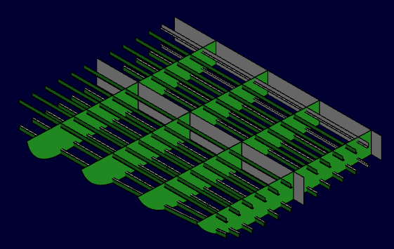
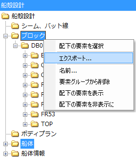
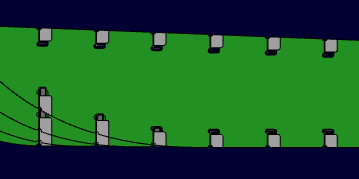
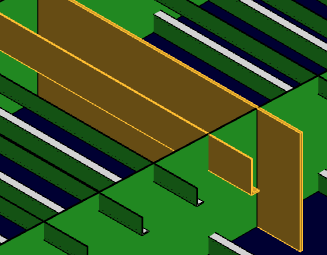
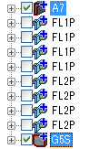
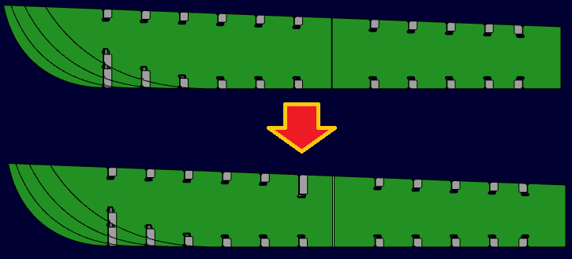
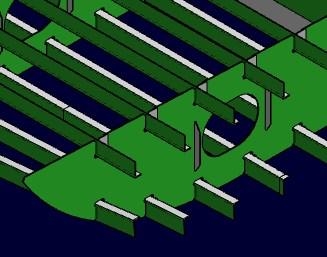
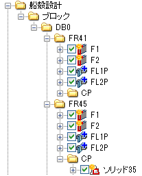
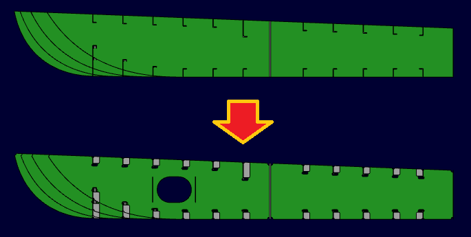

基本設計を担当する設計者Aと詳細設計を担当する設計者Bに分かれて作業し、二重底モデルを作成します。

設計者Bが使う作業ファイルを要素のエクスポートで作成します。

完全に同じファイルを使って作業を始めたい場合は、エクスプローラ上でファイルコピーしても良いです。
設計者Bは、別の板にスロットを追加します。

設計者Aは、ロンジや板厚を変更します。

その後、ファイルを保存して、設計者Bへ渡します。
現在、同一ボディ内でのマージインポートはサポートしておりません。（一部例外あり）
マージの際にどちらかの変更を破棄する必要があります。
設計者Bは、ファイル‐マージインポートで差分を確認し、インポートします。

インポートされた要素によってスロットが再計算されます。

設計者Bは引き続き詳細設計を進め、ホールやスチフナ、スカラップを作成する。
作業が終わったらファイルを保存して、設計者Aへ渡します。

設計者Aは、ファイル‐マージインポートで設計者Bの作業をインポートします。

設計者Bの変更がすべて取り込まれました。 